화학분석기사 (2022-04-24 기출문제)
1과목: 화학분석 과정관리
1. 기체 상태의 수소 화합물을 형성하는 원소 X의 수소 화합물을 분석한 결과가 아래와 같을 때, X의 수소 화합물 1mol에 포함된 수소 원자의 질량(g)은?
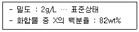
- 80.64
- 8.064
- 0.8064
- 0.08064
(정답률: 64%)

2. 분광분석기기에서 단색화 장치에 대한 설명으로 가장 거리가 먼 것은?
- 필터, 회절발 및 프리즘 등을 사용한다.
- 연속적으로 단색광의 빛을 변화하면서 주사하는 장치이다.
- 빛의 종류에 따라 단색화 장치의 기계적 구조는 큰 차이를 갖는다.
- 슬릿은 단색화 장치의 성능특성과 품질을 결정하는데 중요한 역할을 한다.
(정답률: 59%)
3. 고성능 액체크로마토그래피의 교정 시 확인사항이 아닌 것은?
- 바탕선 확인
- 시료 채취 장치의 확인
- 표준물질의 스펙트럼 확인
- 오븐과 운반가스 성능의 확인
(정답률: 74%)
4. 전자식 분석용 저울에서 가장 필요 없는 장치는?
- 코일
- 영점 검출기
- 전류 증폭장치
- 저울대 고정장치
(정답률: 49%)
5. 분자량이 비슷한 아래의 물질 중 끓는점이 가장 높은 물질의 분자간 작용하는 힘의 종류를 모두 나열한 것은?
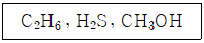
- 분산력, 수소결합
- 공유결합, 수소결합
- 공유결합, 쌍극자-쌍극자 인력
- 쌍극자-쌍극자 인력, 수소결합
(정답률: 61%)
6. 아래의 방향족화합물을 올바르게 명명한 것은?
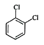
- ortho-dichlorobenzene
- meta-dichlorobenzene
- para-dichlorobenzene
- delta-dichlorobenzene
(정답률: 86%)
7. 다음 중 전자친화도가 가장 큰 원소는?
- B
- O
- Be
- Li
(정답률: 84%)
8. 2.9g 뷰테인의 완전연소 반응으로 생성되는 이산화탄소의 부피(L at STP)는?
- 0.72
- 0.96
- 4.48
- 8.96
(정답률: 71%)
9. 분광분석법에 사용하는 레이저에 대한 설명으로 틀린 것은?
- 레이저는 빛의 증폭현상으로 인해 파장범위가 좁고, 센 복사선을 낸다.
- 색소 레이저를 이용하면 수십 nm 범위 정도에 걸쳐 연속적으로 파장을 변화시킬 수 있다.
- Nd:YAG 레이저는 기체 레이저로서 다양한 실험에 널리 사용되고 있다.
- 네단계 준위 레이저는 세단계 준위 레이저보다 적은 에너지를 이용하여 분포반전을 일으킬 수 있다.
(정답률: 52%)
10. 실험실에서 아마이드(amide)를 만들기 위해 흔히 사용하는 것으로만 짝지어진 것은?
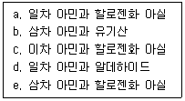
- a, c
- b, d
- a, c, e
- a, b, c, e
(정답률: 53%)
11. 바탕시료 분석을 통해 분석자가 확인할 수 있는 것은?
- 영점
- 오차
- 처리시간
- 매트릭스 바탕
(정답률: 46%)
12. 광자 검출기가 아닌 것은?
- 열전기 전지
- 광전자 증배관
- 실리콘 다이오드
- 전하 이동 검출기
(정답률: 57%)
13. 15wt% KOH 수용액 250g을 희석하여 0.1M 수용액을 만들고자 할 때, 희석 후 용액의 부피(L)는? (단, KOH의 분자량은 56g/mol 이다.)
- 0.97
- 3.35
- 6.70
- 10.⑤
(정답률: 67%)
14. 79.59g Fe와 30.40g O를 포함하고 있는 화합물 시료의 실험식은? (단, Fe의 원자량은 55.85 g/mol 이다.)
- FeO2
- Fe3O5
- Fe3O4
- Fe2O4
(정답률: 76%)
15. 적정 실험에서 0.5468g의 KHP를 완전히 중화하기 위해서 23.48mL의 NaOH 용액이 소모되었다면, 사용된 NaOH 용액의 농도(M)는? (단, KHP는 KHC8H4O4이며, K의 원자량은 39g/mol이다.)
- 0.3042
- 0.2141
- 0.1142
- 0.0722
(정답률: 66%)
16. 전자 배치를 고려할 때, 짝짓지 않은 3개의 홀전자를 가지는 원자나 이온은?
- N
- O
- Al
- S2-
(정답률: 76%)
17. 원소의 성질을 설명한 것으로 틀린 것은?
- 0족 원소들은 불활성, 불연성이며 상온에서 기체이다.
- 1A족 원소들은 금속이며 염기성을 띤다.
- 5A족에 속하는 질소(N)는 매우 다양한 산화수를 가진다.
- 7A족은 할로겐족으로서 반응성이 크며 +1의 산화수를 가진다.
(정답률: 74%)
18. 탄화수소 화합물에 대한 설명으로 틀린 것은?
- 탄소-탄소 결합이 단일결합으로 모두 포화된 것을 alkane 이라 한다.
- 탄소-탄소 결합이 이중결합이 있는 탄화수소 화합물은 alkene 이라 한다.
- 탄소-탄소 결합이 삼중결합이 있는 탄화수소 화합물은 alkyne 이라 한다.
- 가장 간단한 alkyne 화합물은 프로필렌이다.
(정답률: 84%)
19. 원자 내에서 전자는 불연속적인 에너지 준위에 따라 배치된다. 이러한 에너지 준위 중에서 전자가 분포할 확률을 나타낸 공간을 의미하는 용어는?
- 전위(potential)
- 궤도함수(orbital)
- 원자핵(atomic nucleus)
- Lewis 구조(structure)
(정답률: 82%)
20. 크로마토그래피에 대한 설명 중 틀린 것은?
- 역상(reversed phase) 크로마토그래피는 이동상이 극성이고 정지상이 비극성이다.
- 정상(normal phase) 크로마토그래피에서 이동상의 극성을 증가시키면 용리시간이 길어진다.
- 젤 투과 크로마토그래피(GPC)는 고분자 물질의 분자량을 상대적으로 측정하는데 사용한다.
- 고성능 액체크로마토그래피(HPLC)는 비휘발성 또는 열적으로 불안정한 물질의 분석에 유용하다.
(정답률: 58%)
2과목: 화학물질 특성분석
21. EDTA 적정 방법 중 음이온을 과량의 금속 이온으로 침전시키고, 침전물을 거르고 세척한 후 거른 용액 중에 들어 있는 과량의 금속 이온을 EDTA로 적정하여 음이온의 농도를 구하는 방법은?
- 역적정
- 간접 적정
- 직접 적정
- 치환 적정
(정답률: 43%)
22. 원자 분광법에서 시료 형태에 따른 시료 도입방법으로 적절치 않은 것은?
- 고체 : 직접 주입
- 용액 : 기체 분무화
- 고체 : 초음파 분무화
- 전도성 고체 : 글로우 방전 튕김
(정답률: 68%)
23. 0.10M 암모니아 용액의 pH는? (단, NH3의 pKb는 5이고, Kw는 1.0×10-14 이다.)
- 9
- 10
- 11
- 12
(정답률: 36%)
24. 어느 일양성자산(HA) 용액의 pH가 2.51일 때, 산의 이온화 백분율(%)은? (단, HA의 Ka는 1.8×10-4 이다.)
- 3.5
- 4.5
- 5.5
- 6.5
(정답률: 50%)
25. 두 이온의 표준 환원 전위(E°)가 다음과 같을 때 보기 중 가장 강한 산화제는?
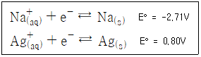
- Na+(aq)
- Ag+(aq)
- Na(s)
- Ag(s)
(정답률: 70%)
26. 원자 방출 분광법에 이용되는 플라스마의 종류가 아닌 것은?
- 흑연 전기로(GFA)
- 직류 플라스마(DCP)
- 유도 결합 플라스마(ICP)
- 마이크로파 유도 플라스마(MIP)
(정답률: 67%)
27. 0.10M NaNO3를 포함하는 AgCl 포화 용액에 대한 설명 중 옳은 것은? (단, AgCl의 Ksp = 1.8×10-10 이다.)
- 이온 세기는 0.20M 이다.
- Ag+와 Cl-의 농도는 동일하다.
- Ag+의 농도는
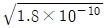
M이다. - 이 용액에서 Ag+의 활동도 계수는 증류수에서보다 크다.
(정답률: 48%)
28. 인산(H3PO4)의 단계별 해리 평형과 산 해리 상수(Ka)가 아래와 같을 때, 인산이온(PO43-)의 염기 가수 분해 상수(Kb1)는? (단, Kw는 1.0×10-14 이다.)
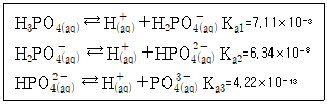
- 1.00×10-14
- 1.41×10-12
- 1.58×10-7
- 2.37×10-2
(정답률: 45%)
29. 이온 세기가 0.1M인 용액에서 중성분자의 활동도 계수(activity coefficient)는?
- 0
- 0.1
- 0.5
- 1
(정답률: 61%)
30. CH3COOH(aq) + H2O(l) ⇄ H3O+(aq) + CH3COO-(aq)의 산해리상수(Ka)를 옳게 나타낸 것은?
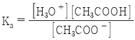
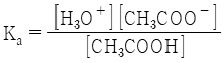
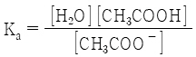
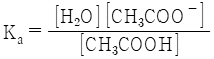
(정답률: 80%)
31. 원자 분광법의 선 넓힘 원인이 아닌 것은?
- 불확정성 효과
- 지만(Zeeman) 효과
- 도플러(Doppler) 효과
- 원자들과의 충돌에 의한 압력 효과
(정답률: 59%)
32. 용액의 농도에 대한 설명 중 틀린 것은?
- 몰농도는 용액 1L에 포함된 용질의 몰수로 정의한다.
- 몰랄농도는 용액 1L에 포함된 용매의 몰수로 정의한다.
- 노르말농도는 용액 1L에 포함된 용질의 그램 당량수로 정의한다.
- 몰분율은 그 성분의 몰수를 모든 성분의 전체 몰수로 나눈 것으로 정의한다.
(정답률: 75%)
33. pH=6인 완충용액을 만드는 방법으로 옳은 것을 모두 고른 것은?
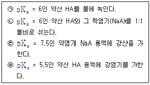
- ㉠
- ㉠, ㉡
- ㉡, ㉢
- ㉡, ㉢, ㉣
(정답률: 54%)
34. 0.10M HOCH2CO2H를 0.⑤0M KOH로 적정할 때 당량점에서의 pH는? (단, HOCH2CO2H의 Ka는 1.48×10-4 이고, Kw는 1.0×10-14 이다.)
- 3.83
- 5.82
- 8.18
- 10.2
(정답률: 24%)
35. 단색화 장치를 사용하여 유효띠 너비가 0.⑤nm인 두 피크를 분리할 때 최대 슬릿 너비(μm)는? (단, 차수는 1차이고 단색화 장치의 초점거리는 0.75m 이며 groove 수는 2400 grooves/mm 이다.)
- 70
- 80
- 90
- 100
(정답률: 39%)
36. 전지에 대한 설명 중 틀린 것은?
- 볼타 전지의 전지 반응은 비자발적이다.
- 전지에서 산화가 일어나는 전극에서는 전자를 방출한다.
- 볼타 전지에서 산화가 일어나는 전극은 아연 전극이다.
- 전해 전지에서 산화·환원 반응을 일어나게 하기 위하여 전기에너지가 필요하다.
(정답률: 64%)
37. pH가 10.0인 Zn2+ 용액을 EDTA로 적정하였을 때 당량점에서 Zn2+의 농도가 1.0×10-14M 이었다. 용액의 pH가 11.0일 때 당량점에서의 Zn2+의 농도(M)는? (단, 암모니아 완충용액에서의 Zn2+의 분율은 1.8×10-5로 일정하며, Zn2+ -EDTA 형성상수는 3.16×1016 이고, pH 10.0 및 11.0 에서 EDTA 중 Y4-의 분율은 각각 0.36과 0.85 이다.)
- 2.36×10-14
- 3.60×10-15
- 4.23×10-15
- 6.51×10-15
(정답률: 15%)
38. 물질의 성질과 관련된 다음의 정보를 얻기 위하여 수행하는 시험은?
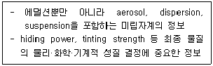
- 분산도 및 인장 강도
- 입자 크기 및 분산도
- 입자 크기 및 표면 분석
- 표면 분석 및 전기적 특성
(정답률: 46%)
39. 정밀도는 대푯값 주위에 측정값들이 흩어져 있는 정도를 말한다. 다음 중 정밀도를 나타내는 지표는?
- 정확도
- 상관 계수
- 분포 계수
- 표준 편차
(정답률: 66%)
40. 전기화학의 기본 개념과 관련한 설명 중 틀린 것은?
- 1J의 에너지는 1A의 전류가 전위차가 1V인 점들 사이를 이동할 때 얻거나 잃는 양이다.
- 산화·환원 반응은 전자가 한 화학종에서 다른 화학종으로 이동하는 것을 의미한다.
- 전기 전압은 전기화학 반응에 대한 자유 에너지 변화(△G)에 비례한다.
- 전류는 전기화학 반응의 반응속도에 비례한다.
(정답률: 48%)
3과목: 화학물질 구조분석
41. 메탄 분자의 일반적인 시료 분자(M)가 CH5+ 또는 C2H5+와 충돌로 인하여 질량 스펙트럼 상에서 볼 수 없는 이온의 종류는?
- (M + H)+
- (MH – H)+
- (MH + 29)+
- (MH + 12)+
(정답률: 49%)
42. 분자 질량 분석 기기의 탈착 이온화(desorption ionization)에 적용되는 시료에 대한 설명으로 틀린 것은?
- 비휘발성 시료에 적용이 가능하다.
- 열에 예민한 생화학적 물질에 적용할 수 있다.
- 액체 시료를 증발시키지 않고 직접 이온화시킨다.
- 분자량이 1,000,000 Da 이하 화학종의 질량 스펙트럼을 얻기 위해 사용된다.
(정답률: 57%)
43. 분리 분석에서 컬럼 효율에 미치는 변수로 가장 거리가 먼 것은?
- 머무름인자
- 정지상 부피
- 이동상의 선형속도
- 정지상 액체막 두께
(정답률: 57%)
44. 액체크로마토그래피(LC)에서 주로 이용되는 기울기 용리(gradient elution)에 대한 설명으로 틀린 것은?
- 용매의 혼합비를 분석 시 연속적으로 변화시킬 수 있다.
- 분리 시간을 크게 단축시킬 수 없다.
- 극성이 다른 용매는 사용할 수 없다.
- 기체 크로마토그래피의 온도 프로그래밍과 유사하다.
(정답률: 60%)
45. 폴리에틸렌의 등온 결정화 현상을 분석할 때 가장 알맞은 열분석법은?
- DTA
- DSC
- TG
- DMA
(정답률: 56%)
46. 백금(Pt) 전극을 써서 수소 이온을 발생시키는 전기량 적정법으로 염기 수용액을 정량할 때 전해 용역으로서 가장 적당한 것은?
- 0.08 M TiCl3 수용액
- 0.01 M FeSO4 수용액
- 0.10 M Na2SO4 수용액
- 0.10 M Ce2(SO4)3 수용액
(정답률: 56%)
47. 열무게분석 장치에서 필요하지 않은 것은?
- 분석저울
- 전기로
- 기체 주입장치
- 회절발
(정답률: 58%)
48. 분석 시료와 시료 분석을 위해 사용할 수 있는 크로마토그래피의 연결로 가장 적절한 것은?
- 잉크나 엽록소 – 얇은 층 크로마토그래피(TLC)
- 무기 전해질 염 - 종이 크로마토그래피(PC)
- 유기약산의 염 – 겔 투과 크로마토그래피(GPC)
- 단백질이나 녹말 – 이온 교환 크로마토그래피(IEC)
(정답률: 66%)
49. 크로마토그래피의 띠(피크, 봉우리) 넓힘 현상에 대한 설명으로 가장 적절한 것은?
- 이동상이 관에 머무는 시간에 역비례한다.
- 용질이 관에 머무는 시간에 정비례한다.
- 이동상이 흐르는 속도에 비례한다.
- 이동상의 속도와 무관하다.
(정답률: 52%)
50. 시차 주사 열량법(DSC)의 측정 결과가 시차열 분석법(DTA)의 결과와 차이가 나타나는 근본적인 원인은?
- 온도 차이
- 에너지 차이
- 밀도 차이
- 시간 차이
(정답률: 72%)
51. 적외선 분광기의 회절발이 72선/mm의 홈(groove)을 가지고 있을 때, 입사각이 30도이고 반사각이 0도라면 회절 스펙트럼의 파장(nm)은? (단, 회절차수는 1로 한다.)
- 6944
- 7944
- 8944
- 9944
(정답률: 40%)
52. CoCl2·?H2O 0.40g을 포함하는 용액을 완전히 전기 분해시켰을 때 백금 환원 전극 표면에 코발트 금속이 0.10g 석출한다면, 시약에서 코발트 1몰과 결합하고 있는 물의 몰수(? ; mol)는? (단, Co와 Cl의 원자량은 각각 58.9amu, 35.5amu 이다.)
- 1
- 2
- 4
- 6
(정답률: 40%)
53. 액체 크로마토그래피 중 가장 널리 이용되는 방법으로써 고체 지지체 표면에 액체 정지상 얇은 막을 형성하여, 용질이 정지상 액체와 이동상 사이에서 나뉘어져 평형을 이루는 것을 이용한 크로마토그래피는?
- 흡착 크로마토그래피
- 분배 크로마토그래피
- 이온교환 크로마토그래피
- 분자배제 크로마토그래피
(정답률: 60%)
54. 적하 수은 전극에서 아래의 산화 환원 반응이 가역적으로 일어나며 pH 2.5인 완충 용액에서 반파 전위(E1/2)가 –0.35V라면, pH 7.0인 용액에서의 반파 전위(E1/2; V)는?
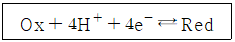
- -0.284
- -0.416
- -0.615
- -0.763
(정답률: 24%)
55. 전자 충격 이온 발생장치에서 1가로 하전된 이온을 103V 로 가속하여 얻은 운동에너지(J)는? (단, 전자의 전하는 1.6×10-19 C 이다.)
- 1.6×10-16
- 0.63×10-16
- 1.6×10-22
- 0.63×10-22
(정답률: 52%)
56. 다음 중 형광의 상대적 크기가 가장 큰 벤젠 유도체는?
- Fluorobenzene
- Chlorobenzene
- Bromobenzene
- Iodobenzene
(정답률: 58%)
57. CaC2O4·H2O의 시료를 질소 분위기에서 열무게분석법(TG)으로 측정할 때 1000℃까지 열분해 과정을 거치면서 생성된 화합물의 변화를 순서대로 나열한 것은?
- CaC2O4·H2O → CaCO3 → CaC2O4 → CaO
- CaC2O4·H2O → CaC2O4 → CaCO3 → CaO
- CaC2O4·H2O → CaO → CaC2O4 → CaCO3
- CaC2O4·H2O → CaC2O4 → CaO → CaCO3
(정답률: 72%)
58. 핵 자기 공명 분광법(Nuclear Magnetic Resonance; NMR) 스펙트럼의 특징으로 틀린 것은?
- 짝지음 상수(J)의 단위는 Hz 단위로 나타낸다.
- 화학적 이동 파라미터 δ값은 단위가 없으나 ppm 단위로 상대적인 이동을 나타낸다.
- 60 MHz와 100 MHz NMR 기기에서 각각의 δ와 J값은 다르다.
- Tetramethylsilane을 내부 표준 물질로 사용한다.
(정답률: 54%)
59. 핵 자기 공명 분광법(Nuclear Magnetic Resonance; NMR)에서 화학적 이동을 보이는 이유에 대한 설명으로 틀린 것은?
- 외부에서 걸어주는 자기장을 다르게 느끼기 때문에
- 핵 주위의 전자 밀도와 이의 공간적 분포의 차이 때문에
- 핵 주위를 돌고 있는 전자들에 의해 생성되는 작은 자기장 때문에
- 한 핵의 자기 모멘트가 바로 인접한 핵의 자기 모멘트와 작용하기 때문에
(정답률: 42%)
60. 전압 전류법의 검출한계가 낮아지는 순서로 정렬된 것은?
- 벗김법＞사각파 전압 전류법＞전류 채취 폴라로그래피
- 벗김법＞전류 채취 폴라로그래피＞사각파 전압 전류법
- 사각파 전압 전류법＞전류 채취 폴라로그래피＞벗김법
- 전류 채취 폴라로그래피＞사각파 전압 전류법＞벗김법
(정답률: 40%)
4과목: 시험법 밸리데이션
61. 기체 크로마토그래피(GC) 분석 시 주입된 시료의 일부분만 분석하고 남은 시료를 우회시켜 배출하는 장치의 소모품은?
- 기체 샘-방지 주사기(Gas-tight syringe)
- 분할 벤트 포집장치(Split vent trap)
- 보호칼럼(Guard column)
- 분리막 디스크(Septum disc)
(정답률: 63%)
62. 기체 크로마토그래피(GC)를 사용하여 12회 반복 측정한 결과가 아래와 같을 때, 측정값의 해석으로 틀린 것은?(문제 오류로 가답안 발표시 4번으로 발표되었지만 확정답안 발표시 2, 3, 4번이 정답처리 되었습니다. 여기서는 가답안인 4번을 누르시면 정답 처리 됩니다.)
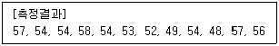
- 평균 : 53.83
- 분산 : 3.070
- 표준편차 : 1.752
- 자유도 : 12
(정답률: 72%)
63. 정확성에 관한 내용 중 틀린 것은?
- 기존에 사용하는 분석법에 의한 분석값과 예상한 참값이 유사하다는 것을 표현하는 척도이다.
- 분석법이 규정하는 범위 전역에 걸쳐 입증되어야 한다.
- 정확성은 규정하는 범위에서 최소 3회 측정으로 평가할 수 있다.
- 정확성은 기지량의 분석대상물을 첨가한 검체의 양을 정량하는 경우에는 회수율로 나타낸다.
(정답률: 57%)
64. 실험자가 시험실에서 감지하지 못하는 내부 변화를 찾아내고, 분석하여 생산되는 측정 분석값을 신뢰할 수 있게 하는 최선의 방법은?
- 내부정도평가
- 외부정도평가
- 시험방법에 대한 정확한 이해
- 측정분석 기기 및 장비에 대한 교정
(정답률: 42%)
65. 밸리데이션 대상이 되는 시험 종류에 대한 설명으로 옳지 앟은 것은?
- 확인시험은 검체 중 분석대상물질을 확인하기 위한 것이다.
- 불순물시험은 검체 중에 존재하는 불순물의 한도시험 또는 정량시험이 될 수 있다.
- 한도시험과 정량시험에 요구되는 밸리데이션 항목은 같다.
- 정량시험은 특정 검체 중의 분석대상물질을 측정하기 위한 것이다.
(정답률: 65%)
66. 반복 측정하였을 때, 유사한 값이 재현성 있게 측정되는 정도를 나타내는 척도는?
- 정확성
- 정밀성
- 특이성
- 균질성
(정답률: 64%)
67. 밸리데이션 수행 순서 중 적합하지 못한 것은?
- 분석에 사용할 표준품의 규격 및 희석액의 제조 시 사용한 시약의 양 및 pH 결과 등을 상세히 기록한다.
- 정확성과 정밀성 평가를 위해 사용한 표준품의 양을 기록하고, 그 결과를 출력하여 부착한다.
- 통계 프로그램을 이용하여 검량선의 작성 및 기울기와 y절편을 산출하여 정량 한계 및 검출 한계를 계산한다.
- 계산된 검출 한계와 정량 한계는 따로 검증을 실시하지 않아도 된다.
(정답률: 77%)
68. A회사의 시약에 관한 유효일 설정 기준은 아래와 같다. A회사에 2019년 1월 31일에 입고된 B시약의 공급자정보에 유효일이 없고 2020년 6월 20일에 개봉하였다면 B시약의 유효일은?
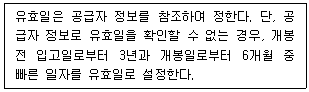
- 2020년 1월 31일
- 2020년 12월 20일
- 2021년 12월 20일
- 2022년 1월 31일
(정답률: 74%)
69. 다음 중 장비 운영 및 이력관리 절차로 가장 적절하지 않은 것은?
- 장비담당자를 지정하여 장비 및 기구 운영현황에 대한 기록 관리를 수행해야 한다.
- 장비등록대장 관리항목으로는 담당자, 분석장비명, 수량, 용도 등이 있다.
- 장비이력카드로 장비명, Serial No., 사용용도 및 교제부품 리스트와 수량, 보수내역에 대해 기록·관리한다.
- 정기적인(3개월, 6개월) 소모품 교체에 관해서는 기록의 생략이 가능하다.
(정답률: 80%)
70. 전처리 과정에서 발생하는 계통오차가 아닌 것은?
- 기기 및 시약의 오차
- 집단 오차
- 개인 오차
- 방법 오차
(정답률: 58%)
71. 식수 속 한 오염물질의 실제(참) 농도는 허용치보다 높은데, 오염물질의 농도 측정 결과가 허용치보다 낮다면 이 측정 결과에 대한 해석으로 옳은 것은?
- 양성(positive) 결과이다.
- 가음성(false negative) 결과이다.
- 음성(negative) 결과이다.
- 가양성(false positive) 결과이다.
(정답률: 63%)
72. 시료를 잘못 취하거나 침전물이 과도하거나 또는 불충분한 세척, 적절하지 못한 온도에서 침전물의 생성 및 가열 등과 같은 원인 때문에 발생하는 오차에 해당하는 것으로 가장 적합한 것은?
- 방법 오차
- 계통 오차
- 개인 오차
- 조작 오차
(정답률: 47%)
73. 분석 물질만 제외한 그 밖의 모든 성분이 들어 있으며, 모든 분석 절차를 거치는 시료는?
- 방법 바탕(method blank)
- 시약 바탕(reagent blank)
- 현장 바탕(field blank)
- 소량첨가 바탕(spike blank)
(정답률: 50%)
74. 다음 수치에 대한 변동계수(CV%)는?
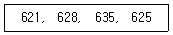
- 0.74
- 0.84
- 0.94
- 1.94
(정답률: 51%)
75. 바탕선에 잡음이 나타나는 시험방법에서 정량한계의 신호 대 잡음비의 일반적인 비율은?
- 2:1
- 3:1
- 10:1
- 20:1
(정답률: 65%)
76. ICP-MS를 이용하여 음료수에 포함된 납의 농도를 납의 동위원소(208Pb)를 통해 분석할 수 있다. 음료수 시료 분석 과정과 결과가 아래와 같을 때, 시료의 208Pb의 농도(ppm)는?(문제 오류로 가답안 발표시 4번으로 발표되었지만 확정답안 발표시 모두 정답처리 되었습니다. 여기서는 가답안인 4번을 누르면 정답 처리 됩니다.)
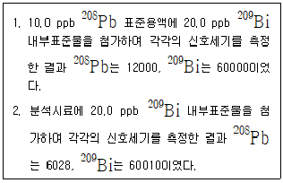
- 0.1004
- 0.5⑤3
- 2.008
- 5.022
(정답률: 63%)
77. 정량한계 결정 시 설정한 정량한계가 타당함을 입증하는 방법은?
- 검출한계부근의 농도로 조제된 적당한 수의 검체를 별도로 분석한다.
- 정량한계부근의 농도로 조제된 적당한 수의 검체를 별도로 분석한다.
- 검출한계부근의 농도로 조제된 검체의 크로마토그램을 확인한다.
- 정량한계부근의 농도로 조제된 검체의 크로마토그램을 확인한다.
(정답률: 50%)
78. 아스피린 알약의 순도를 결정하기 위하여 일련의 바탕용약 흡광도를 측정한 값으로부터 표준편차 0.0048과 아스피린 표준용액의 흡광도로부터 얻은 검정곡선의 기울기가 0.12 흡광도단위/ppm 이였을 때, 검출한계(ppm)는?
- 0.132
- 0.0412
- 0.151
- 0.500
(정답률: 36%)
79. 다음 중 오차를 줄일 수 있는 방법이 아닌 것은?
- 측정자의 훈련
- 측정기기와 기구의 보정
- 다른 분석법과 비교분석
- 동일한 조건으로 분석
(정답률: 63%)
80. 조절된 환경 조건에서 시료의 온도를 증가시키면서 시료의 무게를 시간 또는 온도의 함수로 기록하는 분석법은?
- 시차주사열량법
- 시차열법분석법
- 열무게분석법
- 전기전도도법
(정답률: 58%)
5과목: 환경·안전관리
81. 분진폭발이 대형화하는 경우가 아닌 것은?
- 분진 자체가 폭발성 물질일 때
- 밀폐공간 내 산소의 농도가 적을 때
- 밀폐공간 내 고온, 고압의 상태가 유지될 때
- 밀폐공간 내 인화성 가스 및 가스가 존재할 때
(정답률: 79%)
82. 연구실 일상점검표상 화공안전에 관한 점검 내용으로 가장 거리가 먼 것은?
- MSDS 비치, 화학물질 성상별 분류 및 시약장 보관상태
- 실험 폐액 및 폐기물 관리상태
- 실험실 구역 관계자외 출입금지 구분 및 손소독기 등 세척시설 설치여부
- 발암물질, 독성물질 등 유해화학물질의 격리보관 및 시건장치 사용여부
(정답률: 71%)
83. 실험실에서 유해 화학물질에 대한 안전 조치로 틀린 것은?
- 산은 물에 가하면서 희석한다.
- 과염소산은 유기화합물을 보호액으로 하여 저장한다.
- 독성 물질을 취급할 때는 체내에 들어가는 것을 막는 조치를 취한다.
- 강산과 강염기는 공기 중 수분과 반응하여 치명적 증기를 생성하므로 사용하지 않을 때는 뚜껑을 닫아 놓는다.
(정답률: 62%)
84. 실험실 화재 발생 시 대처 요령으로 적합하지 않는 것은?
- 신속히 주위에 있는 사람들에게 알리고 출입문과 창을 열어 유독가스를 유출시킨다.
- 근접한 화재경보기를 눌러 사이렌을 작동시킨 후 소방서 등에 신고한다.
- 대피 시 젖은 손수건 등으로 입과 코를 가리고 숨을 짧게 쉬며 낮은 자세로 벽을 더듬어 이동한다.
- 화재의 초기 진압이 어렵다고 판단될 경우, 가스 및 중간 밸브를 잠그고 즉시 대피한다.
(정답률: 76%)
85. 유독물질, 제한물질, 금지물질, 사고대비물질에 대한 법규는?
- 위험물안전관리법
- 화학물질관리법
- 산업안전보건법
- 생활화학제품 및 살생물제의 안전관리에 관한 법률
(정답률: 44%)
86. 위험물의 운반용기 외부에 수납하는 위험물의 종류에 따라 표시해야하는 주의사항이 옳게 짝지어진 것은? (단, 위험물안전관리법령상 표시해야하는 주의사항이 다수일 경우, 주의사항을 모두 표기해야한다.)
- 철분 - 물기엄금
- 질산 - 화기엄금
- 염소산칼륨 - 물기엄금
- 아세톤 – 화기엄금
(정답률: 48%)
87. 폐기물에 관한 설명 중 틀린 것은?
- 지정폐기물의 불법처리를 막기 위해 전표제도를 실시하고 있다.
- 수소이온 농도지수가 2.0 이하 또는 12.5 이상인 액체상태의 폐기물은 부식성 폐기물이다.
- 폐기물처리시설이란 폐기물의 중간처분시설, 최종처분시설 및 재활용시설로서 대통령령으로 정하는 시설을 말한다.
- 천연방사성제품폐기물은 방사능 농도가 그램당 100베크렐 미만인 폐기물을 말한다.
(정답률: 53%)
88. 폐기물관리법령상 폐기물 처리 담당자로서 환경부령으로 정하는 교육기관이 실시하는 교육을 받아야 하는 사람이 아닌 것은? (단, 그 밖에 대통령령으로 정하는 사람은 제외한다.)
- 폐기물처리업에 종사하는 기술요원
- 폐기물처리시설의 기술관리인
- 지정폐기물처리시설의 위험물안전관리자
- 폐기물분석전문기관의 기술요원
(정답률: 39%)
89. 폐기물관리법령상 실험실 폐액 보관에 대한 설명 중 틀린 것은?
- 폐유기용제, 폐촉매는 보관이 시작된 날부터 60일을 초과하여 보관하지 않는다.
- 폐유기용제는 휘발되지 아니하도록 밀폐된 용기에 보관한다.
- 지정폐기물과 지정폐기물이 아닌 것을 구분하여 보관한다.
- 부득이한 사유로 장기 보관할 필요성이 있다고 인정이 될 경우 및 지정폐기물이 총량이 3톤 미만일 경우 1년까지 보관할 수 있다.
(정답률: 44%)
90. 어떤 화학물질 처리시설에서 A 물질의 초기농도가 354ppm일 때, 이 물질이 처리기준 이하기 되기 위한 시간(s)은? (단, A 물질의 반응은 1차 반응, 반감기는 20초이고, 처리기준은 1 ppm 이다.)
- 151
- 169
- 227
- 309
(정답률: 52%)
91. 유해화학물질의 유출·누출 사고 시 즉시 신고해야하는 화학물질명 - 유출·누출량을 짝지은 것 중 옳지 않은 것은?
- 염산 - 50kg
- 황산 - 100kg
- 염소 가스 - 5L
- 페놀 – 500kg
(정답률: 43%)
92. 상압에서 인화점이 가장 높은 물질은?
- 아세트알데하이드
- 이황화탄소
- 산화에틸렌
- 아세트산
(정답률: 42%)
93. 위험물안전관리법령에 따른 위험물의 유별과 성질이 맞게 짝지어진 것은?
- 제1류 - 산화성액체
- 제2류 – 인화성액체
- 제3류 – 자연발화성물질 및 금수성물질
- 제4류 – 자기반응성물질
(정답률: 65%)
94. 할로겐은 독가스로 사용될 정도로 유독한 물질이다. 다음 중 할로겐과 알칸의 반응은? (단, 각 반응의 조건은 고려하지 않는다.)
- CH4(g) + 2O2(g) → CO2(g) + 2H2O(L)
- C2H4(g) + Cl2(g) → CH2Cl - CH2Cl(g)
- CH4(g) + Cl2(g) → CH3Cl(g) + HCl(g)
- CH3CH2NH2 + HCl → CH3CH2NH3+Cl-
(정답률: 54%)
95. 26.3 mM Ni2+ 100mL가 H+형의 양이온 교환 칼럼에 부착되었을 때 방출되는 H+의 당량(meq)은?
- 2.26
- 2.26×10-3
- 5.26
- 5.26×10-3
(정답률: 25%)
96. 화학약품의 보관법에 관한 일반사항에 해당하지 않는 것은?
- 화학약품은 바닥에 보관한다.
- 특성에 따라 적절히 분류하여 지정된 장소에 분리 보관한다.
- 유리로 된 용기는 파손시를 대비하여 낮고 안전한 위치에 보관한다.
- 환기가 잘되고 직사광성늘 피할 수 있는 냉암소를 보관하도록 한다.
(정답률: 78%)
97. MFPA hazard class의 가~라에 해당하는 유해성 정보를 짝지은 것 중 틀린 것은?
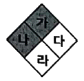
- 가 - 화재위험성
- 나 - 건강위험성
- 다 - 질식위험성
- 라 – 특수위험성
(정답률: 58%)
98. 실험실별 특성에 맞는 안전 보건 관리 수칙이 있다. 다음 중 일반적인 실험실 수칙이 아닌 것은?
- 사고 시 연락 및 대피를 위해 출입구 벽면 등 눈에 잘 띄는 곳에 비상 연락망 및 대피경로를 부착한다.
- 소화기는 눈에 잘 띄는 위치에 비치하고, 소화기 사용법을 숙지한다.
- 취급하고 있는 유해 물질에 대한 물질 안전 보건 자료(MSDS)를 게시하고 이를 숙지한다.
- 금지 표지, 경고 표지, 지시 표지 및 안내 표지 등 필요한 안전 보건 표지는 실험실 내부가 아닌 외부에 부착한다.
(정답률: 78%)
99. 분말소화약제인 탄산수소나트륨 10kg이 1기압, 270℃에서 방사되었을 때 발생하는 이산화탄소의 양(m3)은? (단, Na의 원자량은 23g/mol 이다.)
- 2.65
- 26.5
- 5.30
- 53.0
(정답률: 21%)
100. 위험물안전관리법령상 위험물주유취급소에 설치하는 고정주유설비 또는 고정급유설비의 주유관의 길이는 몇 m 이내로 하여야 하는가? (단, 선단의 개폐밸브를 포함하되 현수식은 제외한다.)
- 3
- 5
- 8
- 10
(정답률: 61%)